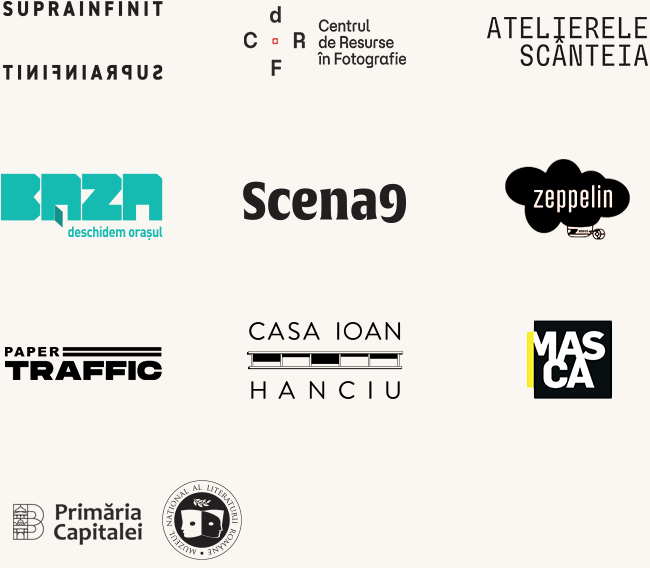
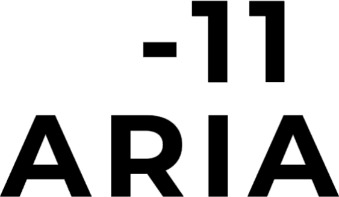

Scena culturală din București este în continuă creștere, iar locurile de desfășurare a inițiativelor culturale variază de la clădiri istorice, la spații industriale, clădiri ridicate în perioada socialistă, sau edificii noi. În acest peisaj eclectic, Filtru Cultural strânge laolaltă inițiative culturale tradiționale și alternative, publice și private, repere arhitecturale și clădiri aparent anonime care alcătuiesc împreună patrimoniul cultural al orașului.
Filtru Cultural este o platformă online care cartografiază și documentează spațiile culturale din București, oferind informații despre activitatea și evenimentele curente ale acestora. În secțiunea Articole poți descoperi actori ai scenei culturale bucureștene în profunzime — nu doar prin prisma activității lor artistice sau instituționale, ci și dintr-o perspectivă istorică, arhitecturală și afectivă.
Web design, UX design • Bianca Basan
Programator • Alexandru Militaru
Redactare articole • Raluca Bujor, Nicoleta Moise, Octavian Puric
Descrierea obiectivelor • Evelin Rencsik, Ana Stan
Traducere • Octavian Puric
Ilustrații • Maria Mălcică
Fotograf • Rareș Toma
Consultant științific • Simina Stan
Director artistic și arhitect consultant • Irina Antohe
Manager de proiect • Corina Munteanu
Asistent manager • Teodora-Melania Munteanu
Voluntari • Drăghicescu Daria Maria, Ionescu Irina Maria, Vișan Victoria, Rădoi Ana-Maria, Cuțătoi Andreea Claudia, Pătru Daria Maria, Bălănică Maria Sofia, Teodora Nicolae, Ivanciu Ilinca, Păpușoi Vlad Ion, Naghi Sabin Mihai, Sara Maria Floricel, Anastasia Melinte


Proiect cultural co-finanțat de Administrația Fondului Cultural Național. Proiectul nu reprezintă în mod necesar poziția Administrației Fondului Cultural Național. AFCN nu este responsabilă de conținutul proiectului sau de modul în care rezultatele proiectului pot fi folosite. Acestea sunt în întregime responsabilitatea beneficiarului finanțării.